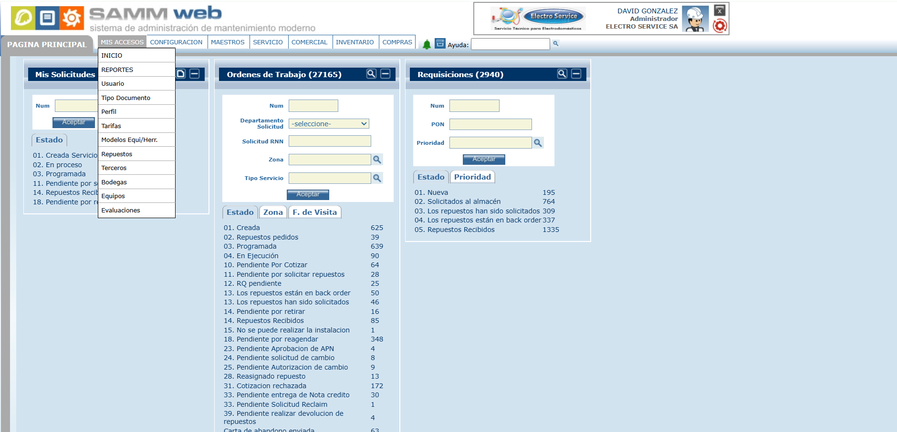
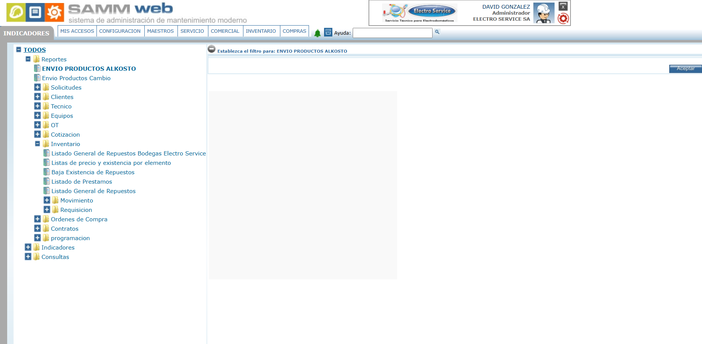
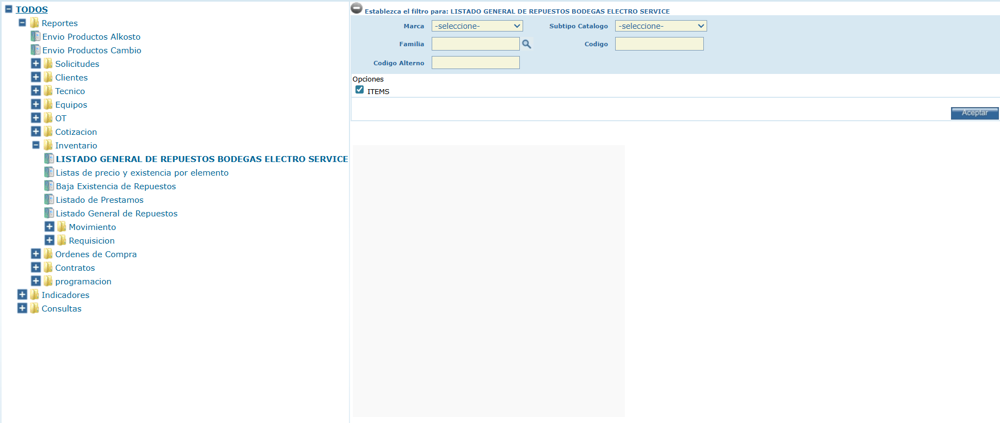
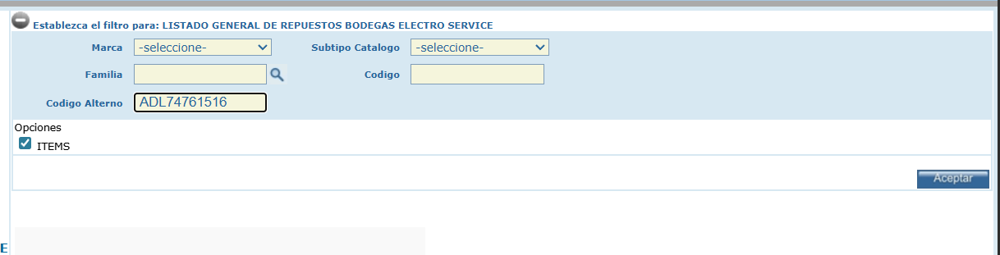
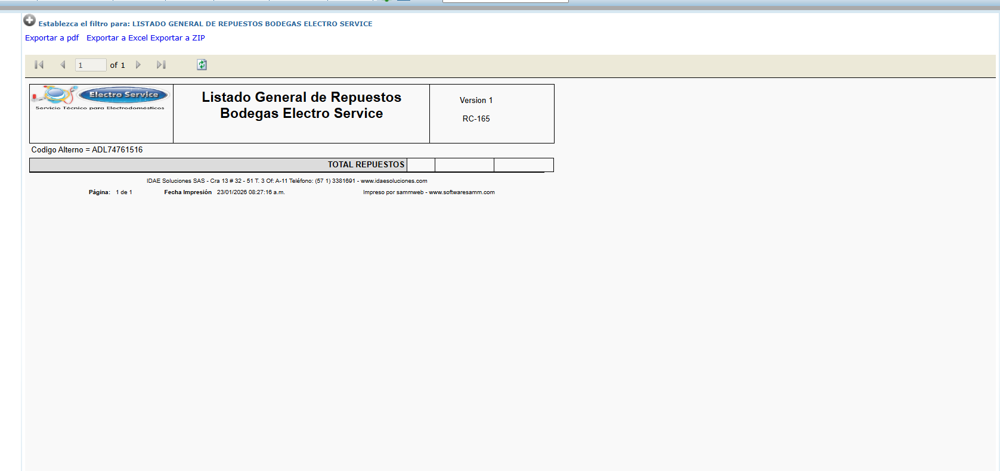

Guía Maestra: Validación en Stock, GSFS, Liquidación de Tarifas y Registro SAMM
Una vez dentro de la página principal de SAMM Web, haz clic en la pestaña superior "MIS ACCESOS". En el menú desplegable que aparece, selecciona la opción "REPORTES".
Se abrirá el panel de indicadores y reportes. En el árbol de carpetas de la izquierda, busca y expande la carpeta llamada "Inventario".
Dentro de Inventario, selecciona el reporte específico: "Listado General de Repuestos Bodegas Electro Service".
En el formulario de filtros, localiza el campo "Código Alterno". Escribe el número de parte del repuesto (ej: ADL74761516) y haz clic en el botón "Aceptar".
El sistema generará un documento donde podrás verificar el stock disponible y la bodega exacta donde se encuentra el repuesto.
Este manual describe el proceso para gestionar repuestos, desde la búsqueda inicial hasta la legalización del pedido en el sistema. Antes de comenzar, identifique el tipo de requerimiento:
Acceda a CS PORTAL e ingrese al código de facturados (COS03262-S) con sus credenciales y clave OTP. Luego, haga clic en el botón GSFS.


Navegue a: Repuestos > Gestión de repuestos. En "Condición de búsqueda", elija su método:

Ingrese el código, clic en la lupa, seleccione la casilla y clic en Consulta.

Seleccione By Model e ingrese el modelo. Use la herramienta "Despiece" para abrir el diagrama. Identifique la pieza, haga clic en la flecha para obtener el número de parte y cópielo.


Si hay stock, haga clic en el botón "+" (Stock Info) junto a Stock Info para ver las bodegas:

| Bodega | Estado |
|---|---|
| Bodega NA6 | Entrega Rápida / Inmediata |
| Otras Bodegas | Contactar a LG para validar llegada (Importación). |
Una vez identificada la parte disponible, haga clic en Aplicar Precio.

Ingrese a la página de cotizaciones LG y seleccione el Tipo de Cliente (OTT, Venta Público, Mayorista, etc.):
Ir a Calculadora de Repuestos
Ingrese el precio de compra y clic en Calcular.
Cuando el cliente acepte, debe enviar el comprobante de pago: 50% para OTT o 100% para Venta. Tras el aval legal, en GSFS añada el repuesto dando doble clic y configure:


Al dar clic en Enviar, el sistema generará el número de pedido PON.
Busque la orden en el sistema SAMM:

Cambie el estado a "Pendiente por solicitar repuestos" y haga clic en Requisición.


1. Abrimos SAMM y nos dirigimos al módulo correspondiente.

2. Vamos al botón de lupa en el recuadro de requisiciones.

3. Hacemos clic en el botón Nuevo.

4. Se abrirá el formulario de creación.

5. Nos dirigimos al espacio de selección y elegimos la opción Requisición de Venta.

6. Diligenciamos los datos del cliente (como si fuera una orden de servicio normal) y procedemos con el registro de los repuestos.
Una vez dentro de la requisición (ya sea desde OTT o Venta), proceda con los siguientes pasos:
Haga clic en el triángulo azul al lado del espacio de observaciones para seleccionar la plantilla de tiempo de despacho.

En el cuadro de observaciones, registre el identificador:

Haga clic en el botón Item y cargue el repuesto con la lupa.


Ajuste la cantidad (Can. Plan) y el precio de venta antes de IVA (Vunit Plan).


FINALICE CAMBIANDO EL ESTADO A: "Repuestos han sido solicitados"